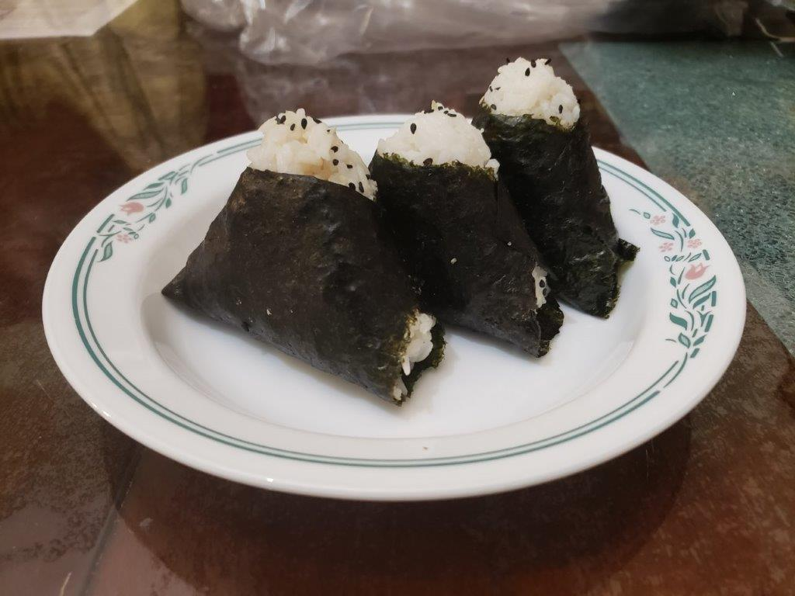

Onigiri

Ingredients:
Onigiri:
- 1 cup Sushi rice
- 2 cups Water
- Salt
- 4 sheets Nori (Dried seaweed)
- Optional: Black and White roasted sesame seeds
Tuna Filling:
- 1 can Tuna, drained
- 2 tbsp Kewpie mayonaise
- 1/2 tbsp Soy sauce
Instructions:
Tuna Filling:
- Combine the ingredients and mix with a fork.
Onigiri:
- Place the rice and water into a saucepan over high heat until it begins to boil. Then, cover and lower to low heat. Cook until the water is completely gone and the rice does not stick to your finger when touched. Remove from heat and let cool while still covered.
- Wet both and then lightly salt hands. Scoop 1/3 cup of rice and make a small indentation in the rice. Fill the indentation with filling of choice, about 1-2 tsp, and mold the rice around the filling. Mold the rice into a triangle shape. Coat with sesame seeds if desired and then wrap with nori.